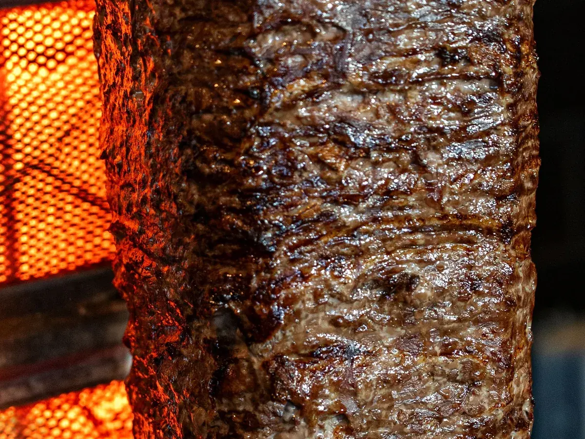
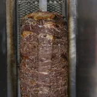

Vers van het spit
Je vlees wordt gesneden op het moment dat jij bestelt. Niets ligt te wachten in de warmhouder.
"Heerlijke döner, rechtstreeks van het spit en niet opnieuw opgewarmd, zoals je bij veel andere zaken ziet."

S. W. op Google